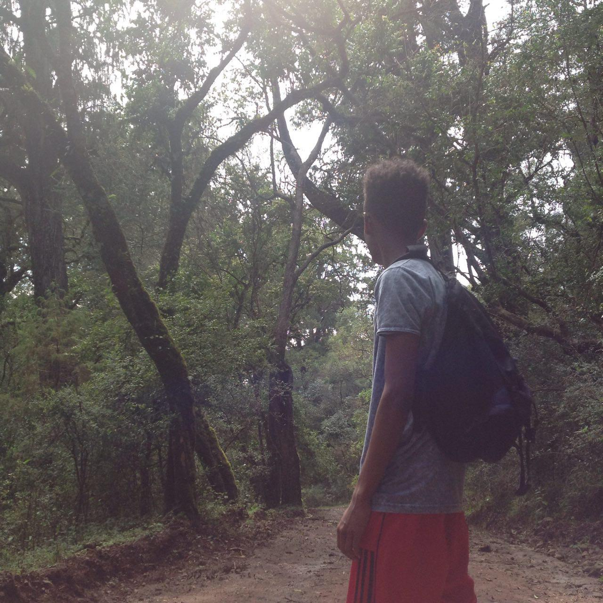

|
 |
Nahom Tamru
Student | Programmer | Movie Fanatic
I am a student at Addis Ababa institute of Technology with the dream of becoming
a very skilled programmer. I have a lot to my story but i like to share a very
portion of it since i believe I am a very closed person or as people refer to me
as.
I really find the joy in watching movies and better yet, criticing and recommending
them. I spend my time on looking for the right movie as much as I do on wathing them
and through time I have developed a good sixth sense about movies. I give movie reviews
from time to time and I do recommend movies i have found as a masterpiece to many of
my peers and on the platforms I get as I did on this website.
My current life at AAiT institute has been well so far. I have been able to take
good knowledge and been part of several essential projects. I have developed as an
aspiring programmer and a good person with a better social life that has been essential
in my growth as a person.
|